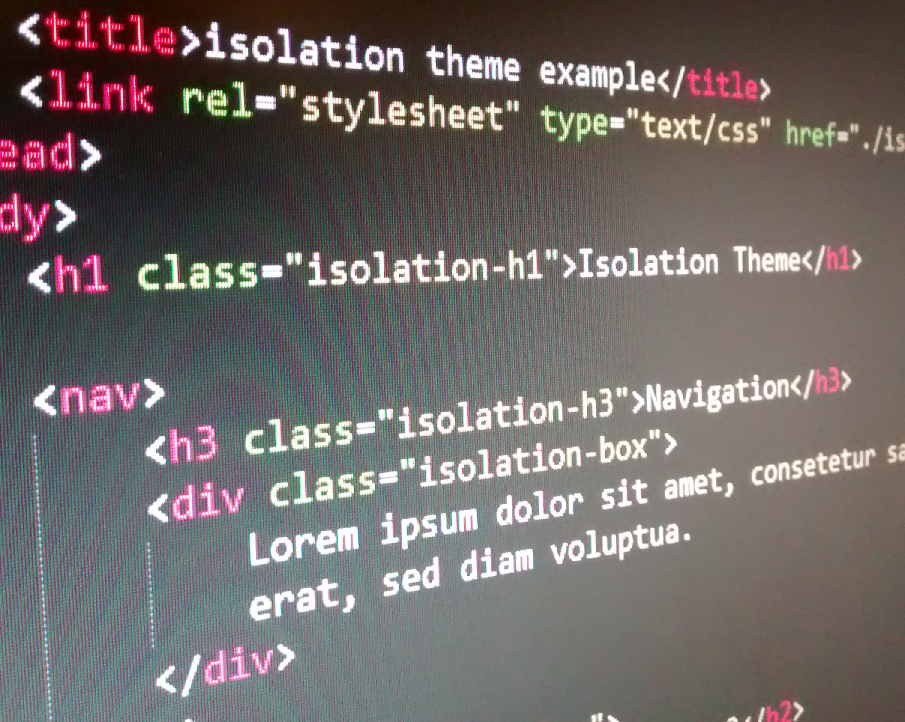

Web
Libraries and themes for a better development.
mediaQuery.js
This is a full JavaScript library for media queries as known from CSS3 but for JavaScript.
Tired of managing device dependent JavaScript code? With mediaQuery.js you can clean up your code so everyone can read and understand it. Also it is fast because it uses Vanilla JS. Therefore you can use it with every other JavaScript library such as jQuery.
For source and docs: Visit on GitHub

Isolation Theme
Warning: work in progress!
This is a HTML5 theme that looks like the terminals in Alien: Isolation.
Visit on GitHub